还可以讲，在坐标系转动下从原点至某一点的距离不变乃是生活中的一项巧遇。这意味着在数学上r2 =x2 +y2 +z2 是一个不变量。换句话说，在经过了转动之后，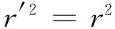 或
现在的问题是：在洛伦兹变换下是否也有一个相似的不变量？有的。从式（25.1）可以看出
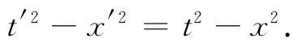
除了它有赖于x方向的特殊选择之外，那是很好的不变量。若再减去y2 和z2 便能把这个问题解决了。于是，任何洛伦兹变换加 转动都会使这个量保持不变。因此，与三维中的r2 相类似的量，在四维中为
t2 -x2 -y2 -z2 .
这是在所谓“完整洛伦兹群”——意指恒速平动和 转动二者都进行的那种变换——下的一个不变量。
现在，由于这个不变性是仅仅依赖于式（25.1）的变换法则——再加上转动——的一个代数问题，它对于任一个四维矢量都是正确的（根据定义，它们都做同样的变换）。因此，对于一个四维矢量aμ 来说，便有
我们叫这个量为四维矢量aμ 的“长度”的平方（有时人们将所有各项的符号都改变而叫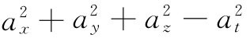 为长度的平方，因而你得要小心对待）。
现在如果有两个 矢量aμ 和bμ ，它们的相应分量按相同的方式变换，则这个组合
at bt -ax bx -ay by -az bz
也是一个不变（标）量（事实上，在第1卷第17章中对此已有过证明）。很明显，这一表示式与矢量的点积很相似。实际上，我们将称之为两个四维矢量的点积 或标积 。把它写成aμ ·bμ 使得看来 像个点积，似乎该合乎逻辑。可是，不凑巧，习惯上不是那样做，而是往往被写成没有中间那一点。因此，我们将按照这一惯例而把该点积简写成aμ bμ 。这样，根据定义 ，
aμ bμ =at bt -ax bx -ay by -az bz . （25.7）
每当你看到两个全同下脚标在一起（有时得用v或某一其他字母来代替μ）时，那就意味着你必须取这四个积并相加起来，记住 对于那些空间分量之积都取负号 。按照这一惯例，在洛伦兹变换之下，标积的不变性可以写成
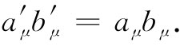
由于式（25.7）中的最后三项恰好是三维中标量的点积，把它写成如下形式往往更为方便：
aμ bμ =at bt -a·b.
在上面描述过的那种四维长度的平方可以写成aμ bμ ，那也是明显的：
有时把它写成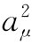 也很方便：
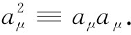
现在要向你们提供有关四维矢量点积的用途的一个例证。在巨大的加速器中，通过下列反应可以产生反质子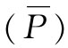 ：
这就是说，一个高能质子与一个静止质子（例如，放置在质子束中的氢靶里的质子）相碰撞，而倘若入射质子拥有足够的能量，则除了原来的两个质子之外还可能会产生质子反质子 [1] 对。试问：应给予入射质子多少能量才能使这一反应在能量上成为可能。
获得答案的最容易的方法是考虑在质心（CM）系中该反应看来像个什么样子（见图25-1）。我们将叫入射质子为a而其四维动量为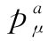 。同理，将叫靶质子为b而其四维动量为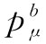 。若入射质子仅仅勉强 具有使反应进行的能量，那么末态——经过碰撞后的状态——在质心系中将由包含三个质子和一个反质子的一个静止球构成。要是入射能量稍高一些，那些末态粒子就会具有一些动能而四散跑开；要是入射能量稍低一些，则不会有足够能量产生四个粒子。
图25-1 从实验室和质心系中来观察反应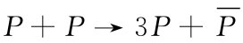 。假定入射质子仅仅勉强具有使反应进行的能量，质子由实心圆点表示，而反质子则由圆圈表示
若把末态中整个小球的四维总动量称为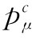 ，则动量与能量守恒律告诉我们：
pa +pb =pc
和 Ea +Eb =Ec .
合并这两式，可以写成
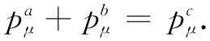 （25.9）
现在重要的事情在于，这是一个其中包含四维矢量的方程，因而在任何惯性系中都是正确的。我们可以利用这一事实来简化计算，由取式（25.9）中每边的“长度”开始，当然，它们也是彼此相等的，于是得
既然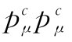 是不变的，所以可在任何坐标系中进行计算。在质心系中，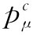 的时间分量为四个质子的静止能量，即4M，而空间部分p则等于零，因此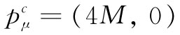 。我们已利用了反质子的静质量等于质子的静质量那一项事实，并已称这一共同质量为M。
这样，式（25.10）就变成
现在，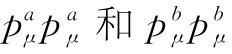 都十分容易求得，因为任何粒子的动量四维矢量的“长度”都不过是粒子质量的平方：
pμ pμ =Ε2 -p2 =M2 .
这可由直接的计算给予证明，而更巧妙的办法则是通过注意一个静 粒子的pμ =（M，0），从而pμ pμ =M2 。但由于它是一个不变量，故在任何 参照系中都等于M2 。把这些结果用到式（25.11）中，便有
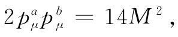
也即
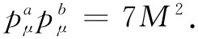 （25.12）
现在，也就可以在实验室系统中算出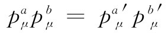 。四维矢量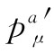 可以写成（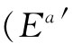 ，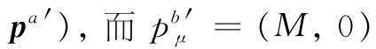 ，因为后者描述一个静止质子。这样，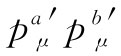 也必定等于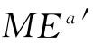 。又因为知道标积是个不变量，所以它在数值上必须等于式（25.12）中求得到的值。因而有
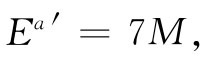
这就是我们所要求的结果。初始质子的总 能量必须至少为7M（约合6.6 GeV，因为M=938MeV），或者在减去了静质量M之后，其动 能至少必须为6M（约合5.6GeV）。在伯克利（Berkeley）的高能质子同步稳相加速器是为了能够制造反质子而设计的，它提供给受加速质子约6.2GeV的动能。
由于标积都是不变量，所以它们对计算来说总是有趣的。那么，关于四维速度的“长度”uμ uμ 又该如何呢？由于
因而uμ 是单位四维矢量 。